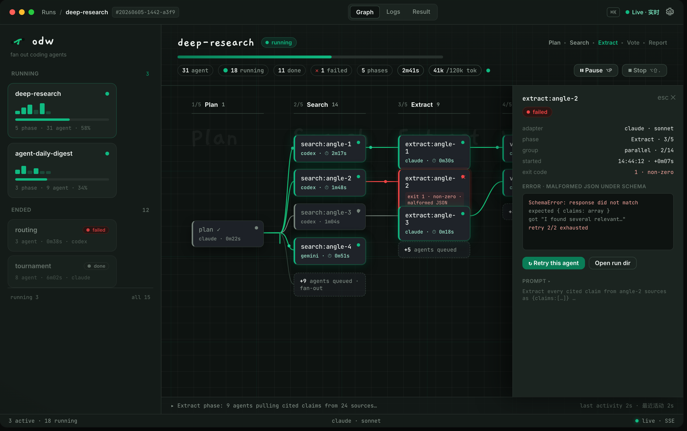
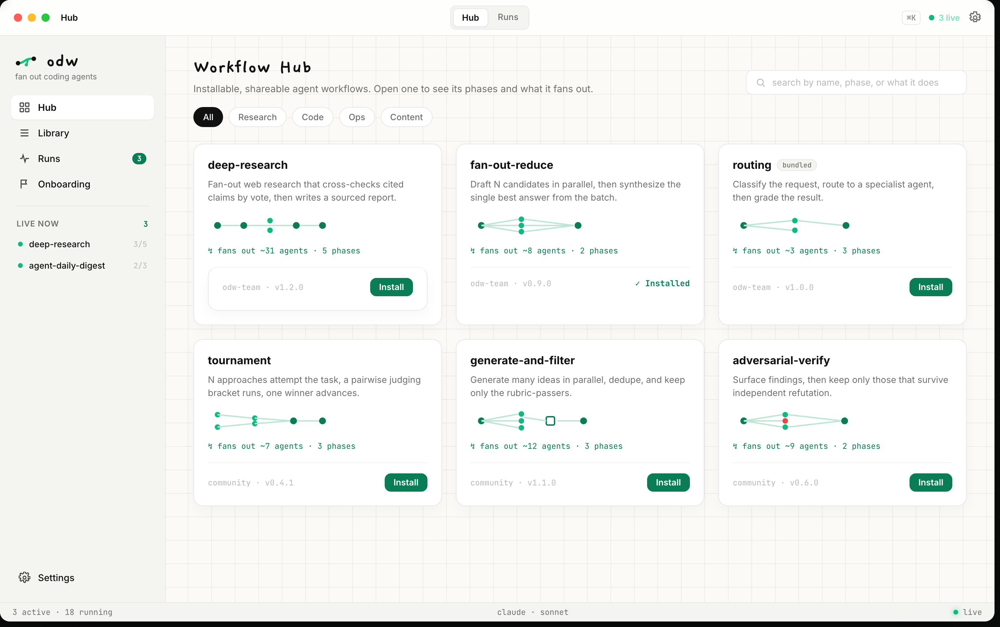
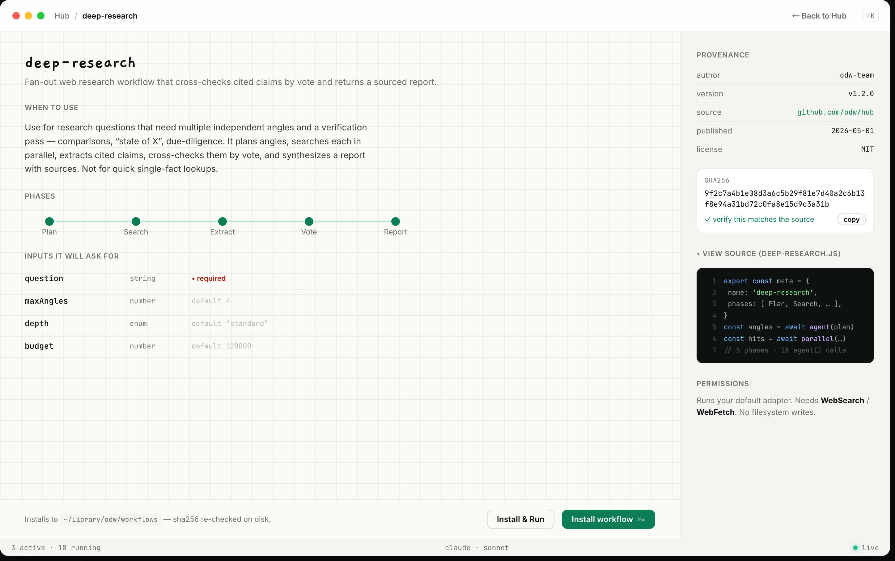
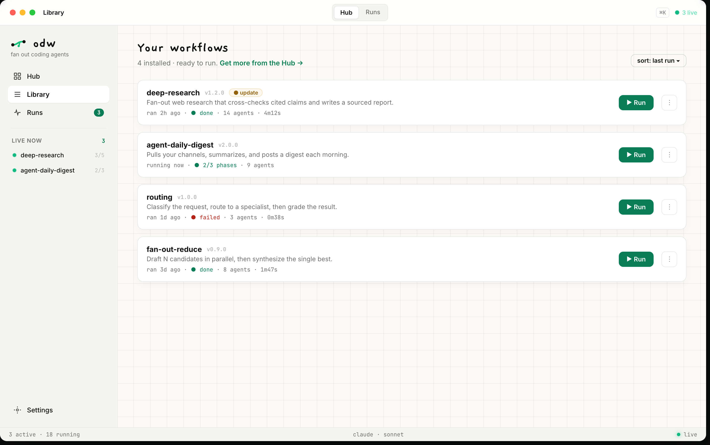
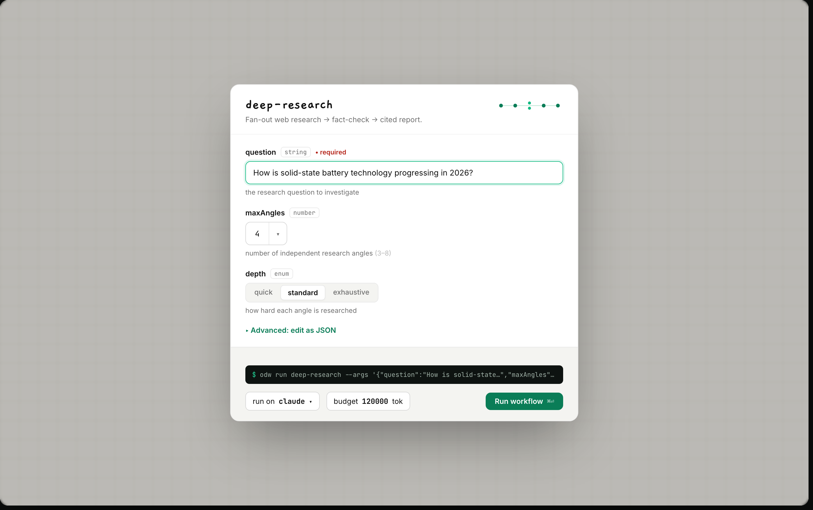
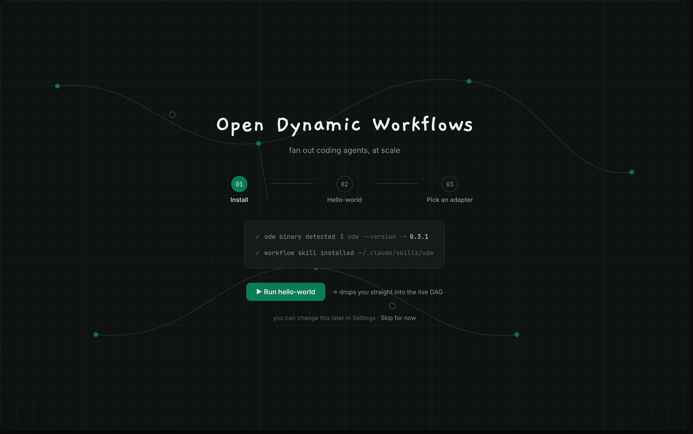
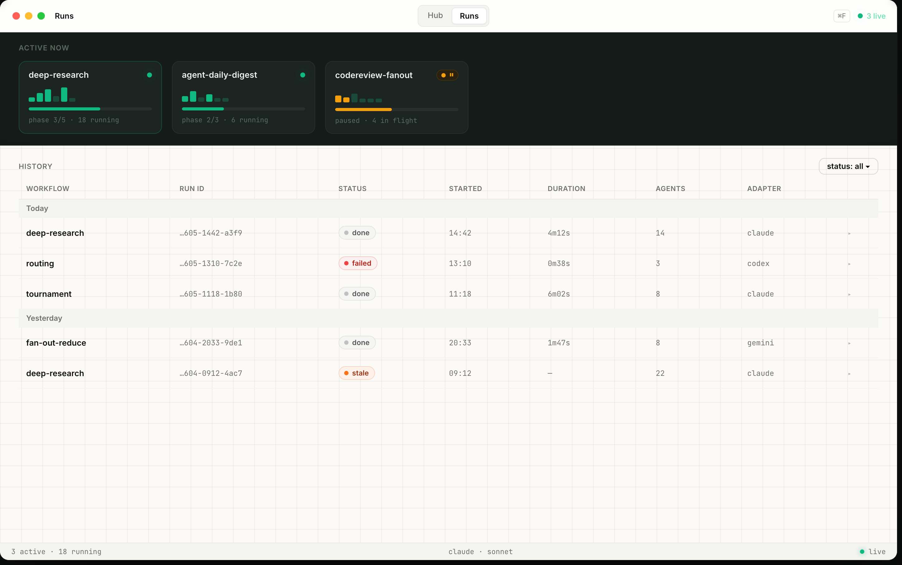
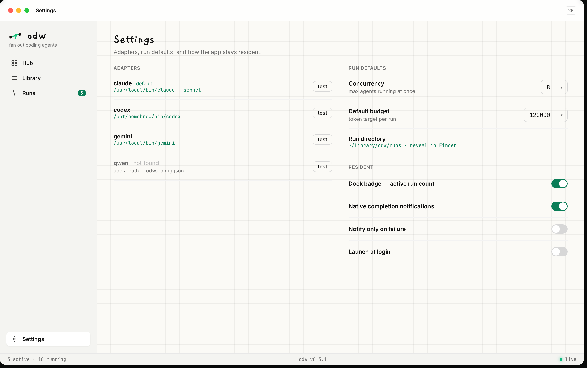
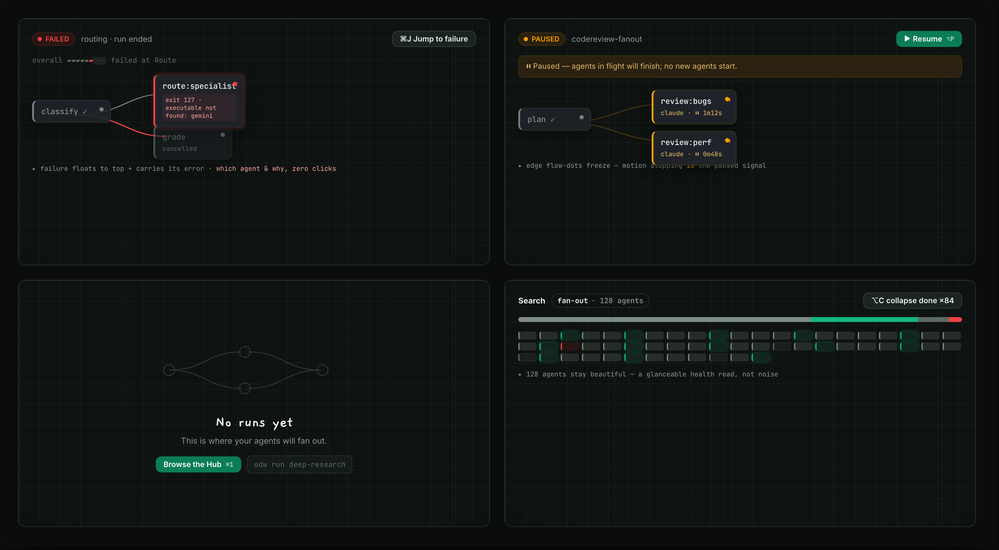
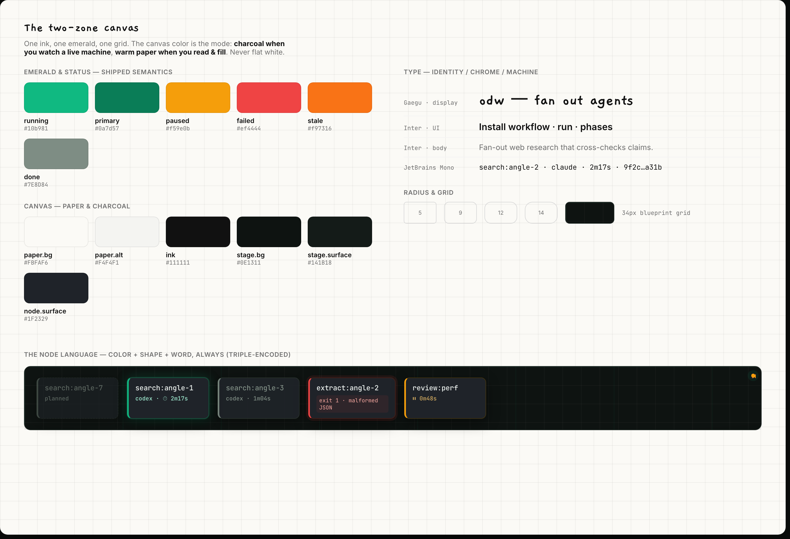

Mission control for fanning out coding agents. 10 screens · two-zone canvas (charcoal = watch, paper = read) · emerald status system · 34px blueprint grid. Click any screen to open it isolated (ideal for importing to Figma one frame at a time).










The Figma MCP is capped at 6 calls/month on the Starter/View seat, so I can't push to the file directly. The html.to.design plugin converts these screens into editable Figma layers — text, frames, vectors — not flat images.
Plugins → html.to.design (install from Community if needed).?only=s0X URL is one clean frame).?only=s01 (the hero) first.npx serve docs then a tunnel (e.g. ngrok http 3000), or host the file.…/odw-client-mockup.html?only=s01 URL.docs/odw-client-screens/ straight onto a Figma canvas as reference frames.Serve locally first: cd docs && python3 -m http.server 4319 → open http://127.0.0.1:4319/odw-client.html. Fonts are Gaegu / Inter / JetBrains Mono (Google Fonts) — the plugin fetches them automatically.